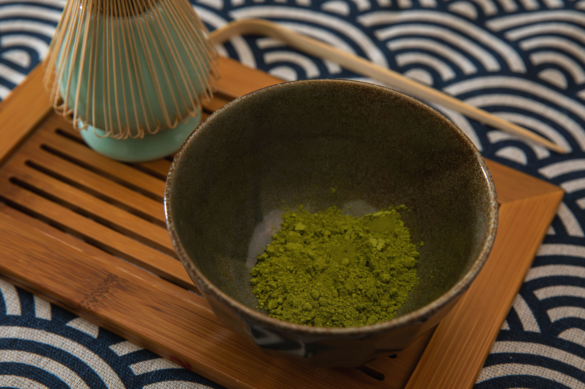

The Challenge
Matcha is a finely ground powder made from Japanese green tea leaves. It contains multiple benefits such as caffeine and L-theanine.
Matcha today has been popularized for its benefits and calming appeal. Poptcha's identity wants to maintain the appeal of matcha, while also portraying a vibrant image to stand out from competitors. The main challenge is to create a brand identity for Poptcha that appeals to its consumers while standing out as a matcha brand.
The problem I need to solve: How can Poptcha's identity portray vibrancy while appealing to matcha consumers?
